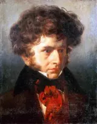

Symphonie fantastique, Op. 14
5 recordings · 52 min
In the Hall
- I. Rêveries — PassionsIgor Markevitch, Orchestre Lamoureux · 11–17 January 196114:15
The first movement of Berlioz’s Symphonie fantastique, Op. 14, “Rêveries — Passions”, introduces the melody of the beloved, which returns in all five movements. Flute and violins first play it after a slow introduction broken by silences and sudden outbursts.
Listening notes · joins
- Romance from Florian’s Estelle
Before leaving for Paris, Berlioz burned his early compositions, but he kept one melody in his memory. He had written it to words from Florian’s Estelle while grieving over his own adolescent love. Years later it became the violins’ melody in this introduction.
- The “vague des passions”
Berlioz’s programme gave the artist a “soul-sickness”, with melancholy and joys without cause, before he had ever seen her. It took the name for this, le vague des passions, from “a famous writer” whom it left unnamed. The writer was Chateaubriand.
- Beethoven in Paris, 1828
In 1828 Habeneck’s new Conservatoire concerts brought Beethoven to Paris. Berlioz wrote that Beethoven “opened a new world in music”. After the C minor Symphony, Berlioz’s teacher Lesueur hurried out red-faced and said he was so shaken that he thought he could not find his head to put his hat on.
- Harriet Smithson in Paris, 1827
In September 1827 Berlioz saw Harriet Smithson act Shakespeare in Paris, and he fell in love with her before they had met. By 1830 he was writing a symphony about an artist obsessed with his beloved. Smithson heard the revised work in December 1832.
- Idée fixe, flute and first violins
The flute and first violins play the idée fixe, the fixed idea or obsession, which Berlioz’s 1845 programme identified with the beloved. Its opening G is tied across the barline before the melody rises. Long notes and new starts extend the phrase well beyond four bars.
- First performance, Paris, 1830
On 5 December 1830 Habeneck conducted the première at the Paris Conservatoire. The players gave their services free and had only two rehearsals for the new symphony and Berlioz’s cantata Sardanapale. Three movements caused a sensation; the countryside scene barely registered.
- Development, from bar 168
In the development the long melody is broken into shorter phrases. The strings begin a figure and the woodwinds reply. Under a held chord the lower strings keep moving, and fragments of the beloved’s melody return throughout.
- Idée fixe in Herminie, 1828
The idée fixe first appeared in Herminie, the cantata Berlioz wrote in 1828 for the Prix de Rome. In the symphony he gave the vocal melody to the orchestra. It returns later in the waltz, the march to the execution and the witches’ dance.
- Strings against brass chords
In the late Allegro, quick string phrases run against broad wind and brass chords. Trumpets and cornets join the horns, and the violins climb high above them. The dynamic rises from forte to fortissimo.
- Closing chords, Religiosamente
Woodwinds, horns and strings hold broad chords, marked pianississimo, and the trumpets and cornets rest. The restless string figures stop. Berlioz’s programme ends its account of the movement with the artist’s religious consolation.
Joins
- Held G opens the idée fixe
The score changes to C major and Allegro agitato e appassionato assai. Emphatic chords are followed by a softer passage in the strings, and the bass descends. Flute and first violins then begin the idée fixe on G. The G is held across a barline, and the melody then rises to C and E.
- Held chords at Religiosamente
The strings’ moving phrases slow down. At Religiosamente (bar 513), woodwinds, horns and strings hold a succession of quiet chords, marked pianississimo. The timpani punctuate the bass, and the trumpets and cornets rest. The closing progression ends in C major.
- II. Un bal — Valse. Allegro non troppoIgor Markevitch, Orchestre Lamoureux · 11–17 January 19616:08
Un bal, the second movement of Berlioz’s Symphonie fantastique, Op. 14, is a waltz marked Allegro non troppo, with two harps playing above the strings. The beloved’s melody enters within the waltz, drops out and later returns once more.
Listening notes · joins
- Introduction, harps and tremolo strings
The strings play a tremolo while two harp parts enter in turn with rising broken chords. The sound grows louder. Then the first violins begin the waltz.
- Waltz theme, first violins
The waltz opens softly in A major. First violins play the tune, while cellos and double basses pluck the first beat of each bar. The melody rises and turns above this pizzicato bass.
- Programme of the second movement
Berlioz’s programme places the artist at a brilliant party, where he sees his beloved, as he also sees her in the countryside. The ballroom has its own music. With her comes the melody heard since the start of the symphony.
- Idée fixe in waltz time
Flute and oboe play the beloved’s melody, now recast in three beats to the bar. Beneath it the strings keep the waltz going, with soft chords above running figures in the cellos and basses. A clarinet then takes up the theme.
- Revision in Florence, April 1831
In Florence in April 1831, Berlioz reorchestrated the movement and wrote a new coda. The waltz had already pleased the audience at the Paris première.
- Return of the waltz, A major
The waltz returns in A major, after the central idée fixe. Its tune passes between strings and woodwinds, and the harps add rippling figures and chords.
- Idée fixe, solo clarinet
The strings stop. A solo clarinet begins the idée fixe again, accompanied by a brief flute phrase, quiet horns and harp chords. After a few bars the dance returns and the melody breaks off.
- Coda, from bar 320
Tempo primo con fuoco, the first tempo, with fire. The strings return at speed and the woodwinds join them, with chords from both harp parts. The dance ends emphatically in A major.
Joins
- The violins begin the waltz
The rising harps and tremolo strings stop. First violins begin the waltz softly in A major, with cellos and basses playing pizzicato on the first beat. Second violins and violas play the lighter chords between those bass notes.
- Idée fixe enters in the waltz
The A major waltz thins out to soft string chords. Flute and oboe begin the idée fixe in the same triple metre. Cellos and basses add running figures below it, and the clarinet takes over the melody as the phrase continues.
- Return of the waltz in A major
In bars 156–192, at the end of the central idée fixe section, the wind melody finishes and the strings play a rising line. The waltz returns in A major. Plucked bass notes mark the first beat, bowed strings play the quick figures, and winds and horns play above them. The triple metre continues unchanged.
- Solo clarinet recalls the idée fixe
The waltz slows and the strings stop. A solo clarinet recalls the idée fixe over quiet horns and harp chords, and the flute adds a short phrase. The string bass has dropped out, and with it the regular tread of the dance.
- Return of the strings at Tempo primo
The clarinet’s recollection ends. At Tempo primo con fuoco the strings return in A major with quick rising figures, and the wind and both harp parts join them. Bass notes and repeated chords carry the last bars to the close.
- III. Scène aux champs — AdagioIgor Markevitch, Orchestre Lamoureux · 11–17 January 196115:58
Scène aux champs, the Adagio third movement of the Symphonie fantastique, Op. 14, opens with a cor anglais call to a distant oboe, representing two shepherds at the end of the day. When the call returns, the oboe does not reply and only thunder follows.
Listening notes · joins
- Opening dialogue, cor anglais and oboe
A cor anglais and a distant oboe exchange slow phrases. The oboe is marked lontano (far away). In Berlioz’s programme the two players are shepherds, and at first they play without accompaniment.
- Composition of the Adagio
This Adagio cost Berlioz more than three weeks of work, and he put it aside and returned to it two or three times. In his Mémoires he set this against the march to the scaffold, which he wrote in a single night.
- Principal theme, flute and violins
The flute and first violins play a broad melody in F major in unison. Plucked strings join beneath them.
- Berlioz’s programme, third movement
In Berlioz’s programme, the evening, the shepherds’ ranz des vaches, trees stirred lightly by the wind and a few new hopes bring the artist “an unaccustomed calm”. He thinks of his isolation and hopes not to be alone much longer.
- Allusions to Beethoven’s birdsong
F major is the key of Beethoven’s “Pastoral” Symphony, and this scene is an homage to it. From bar 67, after the main melody, there are discreet allusions to the birdsong that closes the “Pastoral”’s slow movement.
- Central episode, idée fixe
The middle episode has shorter wind phrases, and the strings grow more restless. The idée fixe enters in the woodwinds and, in altered form, in the basses (bars 87–102). In Berlioz’s programme the artist fears at this point that his beloved is deceiving him.
- Solo clarinet over pizzicato strings
The pastoral music returns at Tempo I, and the woodwinds play quietly. From bar 119 a solo clarinet takes the tune above pizzicato second violins and divided violas. The flute echoes it, and the strings continue pizzicato.
- Borrowing from the Messe solennelle
The pastoral tune first appeared in the Gratias of Berlioz’s Messe solennelle, written in 1824–25. Berlioz moved it from E major to F major for the symphony. The Mass was lost for generations, and the borrowing became known only when it was rediscovered in 1991.
- Revision after the 1830 première
At the première in December 1830 this movement made little impression, and Berlioz resolved to rewrite it. His friend Ferdinand Hiller offered advice. The long countryside scene was among the revisions Berlioz made over several years.
- Cor anglais and four timpani
The cor anglais plays its call again, and the distant oboe does not reply. Beneath it, four timpanists play rolls that rise and fade to represent thunder. Berlioz asked for soft sponge-headed sticks.
- Programme text, 1855 version
Berlioz ended this scene in his 1855 programme with a few broken phrases: “The sun goes down … distant thunder … solitude … silence.” In the programme, the second shepherd does not reply.
- Programme for part IV, 1845
After the silence, the 1845 programme turns to the artist’s despair. Sure that his love is unrecognised, he takes opium. The dose is too weak to kill him but brings strange visions, in which he is led to the scaffold.
Joins
- Flute and violins begin the principal tune
The shepherds’ exchange ends. Flute and first violins begin the principal tune in F major, in unison and with little else sounding. Second violins, violas, cellos and basses enter beneath the melody, pizzicato. The Adagio tempo continues.
- The pastoral tune breaks into fragments
The F major pastoral tune is followed by short wind phrases. The strings climb, adding chromatic notes and repeated figures, marked crescendo poco a poco at bar 83. From bar 87 bassoons, cellos and basses play a distorted form of the idée fixe beneath tremolo chords in the violins.
- Return to Tempo I, bars 110–123
The agitated phrases slow in a rallentando and fade. At Tempo I, flute and oboes play against a sustained note in the solo cellos. The pastoral tune returns in a solo clarinet with a new accompaniment beneath it: pizzicato semiquavers in second violins and divided violas, marked pianississimo.
- Cor anglais returns without the oboe
The F major pastoral music thins to plucked strings and quiet wind chords. At un poco ritenuto the cor anglais takes over. It plays the opening call again, this time with no reply from the distant oboe. Beneath it the timpani, tuned to B♭, F, A♭ and C, play rolls.
- IV. Marche au supplice — Allegretto non troppoIgor Markevitch, Orchestre Lamoureux · 11–17 January 19614:48
In the fourth movement of Berlioz’s Symphonie fantastique, the artist dreams that he is marching to his own execution. A clarinet plays a few bars representing the beloved before the whole orchestra cuts it off.
Listening notes · joins
- Opening, timpani and stopped horns
Timpani begin softly, struck with sponge-headed sticks. Stopped horns enter above plucked cellos and basses. Berlioz’s programme described an opium-dazed musician who dreams that he has murdered his beloved and is being led to execution.
- Descending march, cellos and basses
Cellos and double basses play the descending tune of the opening march in unison, over a pizzicato accompaniment in the upper strings. The tune moves down through G minor, stopping and starting between sharp orchestral replies.
- Second march, B♭ major
The second march is in B♭ major. Woodwinds and brass play its square, emphatic tune over the strings and timpani.
- First performance, Paris, 1830
Habeneck conducted the first performance at the Paris Conservatoire on 5 December 1830, after only two rehearsals. The march overwhelmed the audience. In his Mémoires Berlioz recorded its success and the failure of the countryside movement to make an impression.
- Return of the march in G minor
The descending march returns in G minor, carried by bassoons and low strings. The timpani are played with wooden sticks, and bass drum and cymbals join.
- Composition of the march
Berlioz wrote in his Mémoires that he composed the Marche au supplice in a single night. The slow countryside movement of the same symphony had taken him more than three weeks. He went on revising both, and the other movements, for several years.
- Solo clarinet, the beloved’s melody
The march stops and a solo clarinet plays, marked dolce assai ed appassionato — very sweetly and passionately. It begins the beloved’s melody in G major, unaccompanied, in bars 164–168. Berlioz’s programme calls the phrase a final thought of love.
- Execution and closing chords
A full-orchestra chord cuts off the clarinet. Two short pizzicato notes follow, then the drums roll and the movement ends on full chords in G major.
Joins
- Cellos and basses begin the march
Soft timpani and stopped horns lead to an orchestral chord in G minor. Cellos and double basses then play the descending march tune together, bowed. Violins and violas play the accompaniment pizzicato.
- The march in B♭ major
The bassoon line and strings diminish. Low brass and timpani prepare the new march, which opens in B♭ major. Flutes, oboes, clarinets, horns and trumpets play the tune above sharply marked strings. The two-beat tread continues.
- The bass tune returns in minor
The B♭ major march thins to plucked strings and wind phrases. G minor returns, and bassoons and low strings play the descending tune. Their crescendo brings the brass back in and adds bass drum, cymbals and timpani played with hard wooden sticks.
- Clarinet enters with the idée fixe
In bars 163–168 a rising orchestral flourish breaks off. The bass instruments stop, and the clarinet begins the idée fixe alone in G major, pianissimo, marked dolce assai ed appassionato. Its long held notes replace the clipped march rhythm.
- Orchestral chord cuts off the clarinet
The clarinet’s phrase ends under a fortissimo chord from the full orchestra. The strings then play two short pizzicato notes. Timpani rolls and chords in the wind and brass follow and make the close in G major. Berlioz’s programme calls the interruption the fatal stroke.
- V. Songe d’une nuit du SabbatIgor Markevitch, Orchestre Lamoureux · 11–17 January 196111:13
The finale of Berlioz’s Symphonie fantastique, Op. 14, “Songe d’une nuit du Sabbat”, depicts the artist’s funeral among witches and monsters, with the beloved’s theme given to the E♭ clarinet. Deep bells introduce the Dies irae, which is later combined with the witches’ dance.
Listening notes · joins
- Opening, muted upper strings
Muted violins and violas play tremolo high above the cellos and basses, whose quick figures rise from the low register. Soft timpani strokes interrupt them. In Berlioz’s programme, the artist dreams that witches and monsters have gathered for his funeral.
- Idée fixe, E♭ clarinet
The idée fixe returns in the clarinets, ornamented with trills and grace notes. After a first statement on C clarinet, the E♭ clarinet plays it as a fast dance. In Berlioz’s programme, the beloved has joined the sabbath.
- Letter to Humbert Ferrand, 1829
On 2 February 1829 Berlioz told his friend Humbert Ferrand that “a descriptive symphony of Faust” was fermenting in his head, and that he meant it to strike the musical world with terror. In the finished symphony the link with Goethe’s Faust is in the last movement, which echoes the Walpurgis Night scene.
- Offstage bells on C and G
Bassoons, cellos and basses fall to a long, soft note. Deep bells enter offstage, sounding C and G. Between their strokes the strings play fragments of the dance that follows.
- Dies irae, bassoons and ophicleides
Four bassoons and two ophicleides play the Dies irae, the chant from the Mass for the Dead, in long notes moving together above the bells. Later statements shorten the note values and pass the tune to higher wind and brass instruments.
- Ronde du Sabbat, fugal string entries
Cellos and double basses begin the witches’ round. Violas enter next, then violins, each group starting while the earlier players continue. The subject is built from quick rising notes and a turn.
- Programme prefaces, 1845 and 1855
In 1845 Berlioz required that the audience receive his programme before hearing the symphony. In 1855 he allowed the symphony to be performed without the explanation. In the later version the opium dream covers the whole work.
- Liszt at the première
The day before the première, the nineteen-year-old Franz Liszt called on Berlioz, whom he had never met. Berlioz talked about Goethe’s Faust, which Liszt admitted he had not read; he soon came to love it as much as Berlioz did. At the concert Liszt applauded so loudly that the whole hall noticed him.
- Dies irae and Ronde du Sabbat combined
From bar 414 the wind and brass hold the Dies irae in long notes while the strings play the witches’ round beneath it at speed. Berlioz names both tunes in the heading above the score.
- Final passage, C major ending
The woodwinds play a short passage alone. The strings then return to bowing, fortissimo, joined by brass chords and timpani. The last pages move towards C major, and the full orchestra plays the closing chords.
Joins
- The E♭ clarinet takes the idée fixe
In bars 21–54 the slow chromatic introduction leads to a brief clarinet statement of the idée fixe over quiet drums. An orchestral outburst interrupts it. The key signature changes to three flats, and the E♭ clarinet then plays the tune as a quick dance in E♭ major, with chords in the oboes and running figures in the bassoons.
- Low descent to the bells
The E♭ major episode breaks off. From bar 87 to bar 101, bassoons, cellos and double basses descend in long notes, falling to pianississimo. At bar 102, bells marked “behind the stage” begin tolling C and G, and the strings play short figures between the strokes.
- Bassoons follow the funeral bells
The C and G bells are followed by four bassoons and two ophicleides, which begin the Dies irae. They play the chant together in long notes, marked forte. High strings and woodwinds rest for this first statement.
- Cellos and basses begin the Ronde du Sabbat
An orchestral chord is followed by the Ronde du Sabbat in C major. Cellos and basses begin its quick rising figure, with a sharply accented turn at the top. Violas enter next, then violins, while the earlier parts continue to play.
- Horns return to the chant
In bars 347–379 the round ends on held notes in the strings and bassoons. Solo horns play the chant in short phrases, and divided violas begin to move beneath them. Solo cellos and a roll on the bass drum join the moving figures before the dance and the chant return together.
- From col legno back to arco
The strings play col legno, then stop for a short woodwind phrase. At bar 467 they return arco, fortissimo, against brass chords and timpani. Cellos and basses play the low notes with the bow again. The closing passage runs on to the final C major chords.